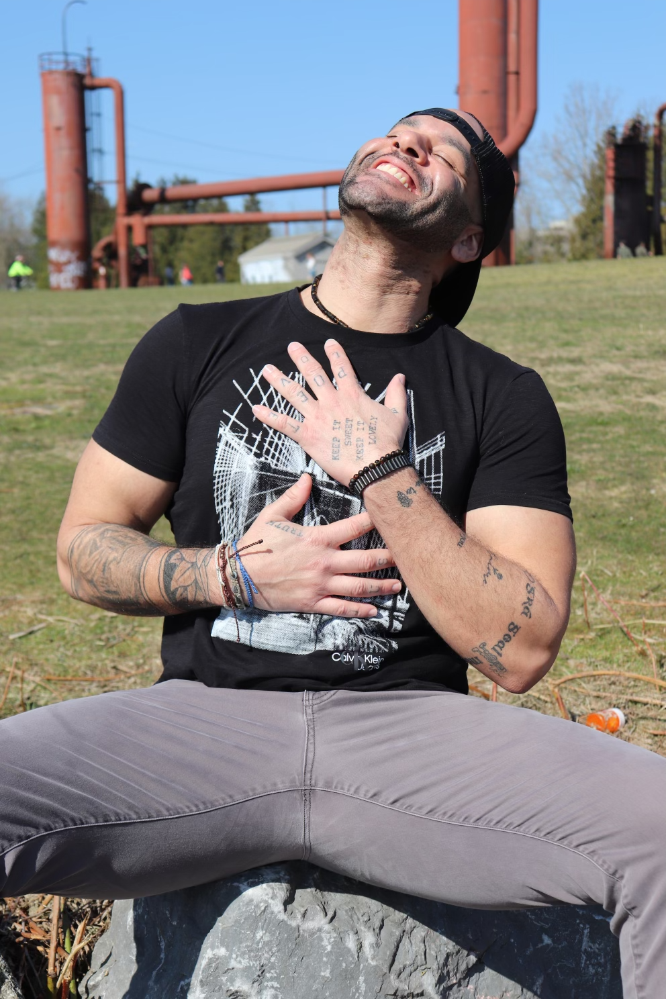

Andrew Thomas Carroll spent the first 35 years of his life as a self-hating black man. Now, after years of Psychedelic Somatic Interactional Psychotherapy and Shadow Hunting, he returns to the world with a purpose and a voice. Andrew was given a gift for word magic and discernment. His depth of vision allows him to identify the underlying incentives driving micro and macro decisions that impact individuals in personal relationship and the greater population through media programming and economic policy. Additionally, Andrew strives to breathe new life into the Eternal Ember that is always inside of you. By sharing his personal journey he hopes to vulnerably demonstrate the poetic art of personal evolution. Andrew is a gifted speaker and loves spoken word, improvising vocals with a jam band, getting outside in the dirt, camping, hiking, water and moving his body through dance and weight lifting. Nutrition is a key part of mental health and Andrew has an intimate understanding of what it takes to stay lean and healthy after a lifetime of self abuse. Axé all day.
| Organization | Title |
|---|---|
| Eternal Ember Development | Chief Storyteller & Builder |
| iAmAndrewCarroll | Freelance Creative & Software Eng. |
| Coffee Bike | Baristacrat |
| Dept of the Air Force | Director of Postal Operations |
| Freelance | Wealth & Purpose Coach |
| Independent | King Creative at Andrew Carroll Presents |


| Degree | Institution | Year |
|---|---|---|
| Adv. Soft. Dev. - Python & JavaScript | Code Fellows | 2023 |
| MS - Mgmt & Leadership | Western Governors University | 2021 |
| BS - Economics | Montana State University - Bozeman | 2014 |
| AAS - Info. Sys. Mgmt. | Community College of the Air Force | 2011 |
| Title | Author | Publishing Date |
|---|---|---|
| The Body Keeps The Score | Dr. Bessel van der Kolk | 2014 |
| Eastern Body, Western Mind | Anodea Judith | 1996 |
| Sometimes A Great Notion | Ken Kesey | 1964 |
| The Surrender Experiment | Michael Singer | 2015 |
| Hebrews To Negroes | Ronald Dalton Jr. | 2014 |
| The Untethered Soul | Michael Singer | 2007 |
Buy your new favorite book Scared Little Poet by Andrew Thomas Carroll!
Learning to make primitive tools and summon fire from the materials gifted us by Creator was a lifechanging moment for me. No matter what is happening, every time I am successful in this skill I feel a massive wave of joy and assurance that I am much more than a survivor. The deepest gratitude for David Halladay for taking the time to help a sneezing stranger immerse himself in nature.